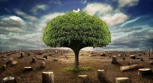
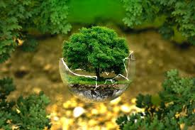

| ¿que es la ecologia? |
|
| la ecología es la rama de la biologia que estudia la relacion de los seres vivos con el
medio que habitan y como influye este en su distribucion,abundancia, biodiversidad, comportamiento, las interacciones entre diferentes especies y las
modificaciones quepueden ocasionar en el medio. su nivel de estudio es a nivel de poblaciones, comunidades, ecosistemas y la biosfera en general. |
|
| suele confundirse con lo que se viene a llamar movimiento ecologista que es mas una filosofia de vida que una ciencia. esta continua confusion presente
en los medios y en el lenguaje cotidiano genera algunos problemas a la hora de la comunicacion cientifica y por este motivo es muy importante tener claro
que es la ecologia, y que estudia la ecologia pues es una ciencia como tal y no involucra ideologia sino que se sustenta en el metodo cientifico. |
|
| el origen etimologico de esta rama de la biologia es del griego oikos que significa hogar y el primer investigador en darle este nombre fue haeckel en 1869.
algunos eminentes ecologos han sido ramon margalef el mas importante ecologo español y eugene p. odum considerado el padre de la ecologia moderna. |
|
|  |
|
| ¿que estudia la ecologia? |
|
| como deciamos la ecologia estudia la relacion de los seres vivos con el medio fisico que habitan y las propias interacciones entre las diversas especies.
dentro del medio que habita una especie se distinguen los factores abioticos o fisicos como pueden ser la humedad, temperatura, iluminacion solar
(aqui puedes ver todos los articulos sobre este tema) y los factores biologicos que son la relacion con otras especies que habitan el mismo medio. |
|
| la ecologia se esta revelando como una ciencia fundamental para intentar predecir los cambios que se estan dando en los ecosistemas como respuesta a las
alteraciones humanas y por tanto conocer que estudia la ecologia y que es, es muy importante para divulgar la importancia de esta ciencia y de sus
conclusiones. |
|
|  |